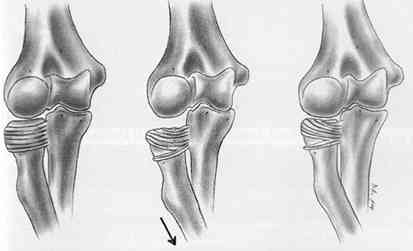
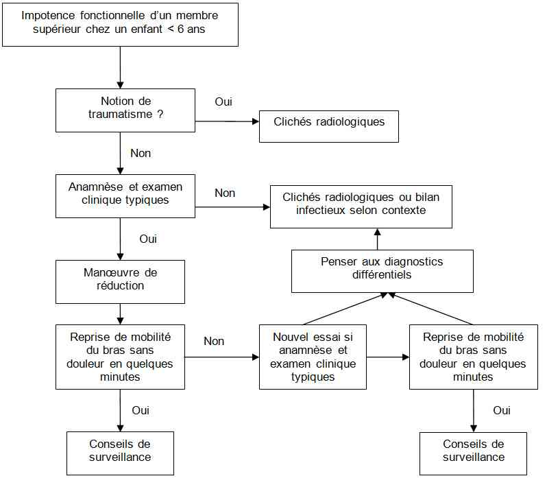

Bienvenue Sur Medical Education
Pronation douloureuse
EnfantSpécialité : pediatrie / traumatologie /
Points importants
-
Pathologie du membre supérieur, la plus fréquente en traumatologie pédiatrique chez le < 6 ans, quasi spécifique de l’enfant (pic de fréquence : 2-3 ans)
-
Subluxation de la tête radiale : la tête radiale distend le ligament annulaire et s’en échappe
-
Lésion bénigne, parfois récidivante
-
Diagnostic clinique essentiellement sur l’anamnèse
-
Traitement simple et rapide
-
Source d’angoisse et de culpabilité pour les parents qui sont souvent à l’origine du geste malencontreux
Présentation clinique / CIMU
SIGNES FONCTIONNELS
-
Attitude stéréotypée de l’enfant
-
Impotence fonctionnelle du bras homolatéral, bras ballant sur le côté, en pronation
-
Attitude du traumatisé du membre supérieur chez l’enfant plus grand
-
Non algique en dehors de toute mobilisation
CONTEXTE
Présentation clinique / CIMU
SIGNES FONCTIONNELS
- Attitude stéréotypée de l’enfant
- Impotence fonctionnelle du bras homolatéral, bras ballant sur le côté, en pronation
- Attitude du traumatisé du membre supérieur chez l’enfant plus grand
- Non algique en dehors de toute mobilisation
CONTEXTE
Terrain
- Enfant < 6 ans
- Filles > Garçons
Circonstances de survenue
- Traction brusque dans l’axe du bras, généralement par la main alors que le coude est en extension et l’avant-bras et la main en pronation : perception d’un déclic
- Pas de traumatisme direct ou indirect
EXAMEN CLINIQUE
- Supination douloureuse et limitée, voire impossible chez le plus grand qui s’oppose lui-même à cette action
- A la palpation, les reliefs osseux sont conservés. Il n’y a ni déformation, ni œdème, ni ecchymose, ni signes inflammatoires locaux. On retrouve en général un point douloureux au niveau de la tête radiale
- Articulations sus et sous jacentes libres et indolores, une fois l’enfant mis en confiance
- Pas de signe de maltraitance
CIMU
- Tri 2
Signes paracliniques
IMAGERIE
-
Aucune
-
Radiographie du coude et de l’avant-bras Face + Profil si contexte atypique, notion de traumatisme, âges extrêmes, à la recherche d’épanchement articulaire et/ou de fracture
Diagnostic étiologique
-
Pathologie liée à l’âge, qui se produit dans des conditions stéréotypées
Diagnostic différentiel
Diagnostic étiologique
- Pathologie liée à l’âge, qui se produit dans des conditions stéréotypées
Diagnostic différentiel
A évoquer en cas d’anamnèse atypique, de traumatisme, d’examen clinique discordant, d’échec de réduction, ou d’impotence fonctionnelle persistante après réduction.
-
Fractures, le plus souvent non déplacées :
- visible sur les clichés radiographiques du coude
- +/- épanchement articulaire associé
- en général, fracture supracondylienne ou de l’extrémité distale du radius en motte de beurre
-
Ostéomyélite ou arthrite :
- en cas de doute, vérifier l’absence de fièvre et de syndrome inflammatoire biologique
Traitement
TRAITEMENT PREHOSPITALIER / INTRAHOSPITALIER
Stabilisation initiale
- En cas d’anamnèse typique, la manœuvre de réduction peut être faite en dehors de toute structure hospitalière
-
2 principales techniques de réduction :
- traction, supination et mise en flexion du coude avec pression sur la tête radiale (méthode la plus utilisée)
- hyperpronation
- La main posée sur la tête radiale perçoit en général le ressaut de la réduction de la tête radiale.
Suivi du traitement
- Reprise d’une mobilité complète et sans douleur du bras
MEDICAMENTS
- Réduction sous MEOPA
Surveillance
CLINIQUE
-
Reprise d’une mobilité complète et sans douleur du bras
Devenir / orientation
CRITERES D’ADMISSION
-
Aucun
CRITERES DE SORTIE
-
Une reprise complète de l’activité est exigée avant le départ
-
Immédiatement après le geste, l’enfant a le souvenir de sa douleur et ne veut pas bouger le bras spontanément. Il doit reprendre confiance. Les parents pourront être les témoins de la réutilisation du bras dans la salle d’attente
ORDONNANCE DE SORTIE
-
Aucune immobilisation n’est indispensable (sauf si pronation ancienne >24h, avec persistance d’une douleur liée à la contraction musculaire chez le plus grand)
-
En cas de douleur : paracétamol par voie orale 15 mg/kg/6h
RECOMMANDATIONS DE SORTIE
-
Prévenir les parents du risque de récidive et des gestes à éviter
-
Revoir l’enfant à 48 heures en l’absence d’amélioration nette après réduction (après avoir éliminé les diagnostics différentiels sus-cités) et programmer une scintigraphie osseuse
Mécanisme / description
-
Chez les enfants < 6 ans, il existe une véritable mobilité du radius lorsqu’on exerce une traction sur l’avant-bras. En effet, les noyaux d’ossification de la tête radiale et du scaphoïde ne sont pas encore consolidés. Lors d’une traction sur l’avant-bras, le radius va se translater sans contrainte osseuse, et la tête radiale, encore cartilagineuse et flexible, va glisser sous le ligament annulaire
Devenir / orientation
CRITERES D’ADMISSION
- Aucun
CRITERES DE SORTIE
- Une reprise complète de l’activité est exigée avant le départ
- Immédiatement après le geste, l’enfant a le souvenir de sa douleur et ne veut pas bouger le bras spontanément. Il doit reprendre confiance. Les parents pourront être les témoins de la réutilisation du bras dans la salle d’attente
ORDONNANCE DE SORTIE
- Aucune immobilisation n’est indispensable (sauf si pronation ancienne >24h, avec persistance d’une douleur liée à la contraction musculaire chez le plus grand)
- En cas de douleur : paracétamol par voie orale 15 mg/kg/6h
RECOMMANDATIONS DE SORTIE
- Prévenir les parents du risque de récidive et des gestes à éviter
- Revoir l’enfant à 48 heures en l’absence d’amélioration nette après réduction (après avoir éliminé les diagnostics différentiels sus-cités) et programmer une scintigraphie osseuse
Mécanisme / description
-
Chez les enfants < 6 ans, il existe une véritable mobilité du radius lorsqu’on exerce une traction sur l’avant-bras. En effet, les noyaux d’ossification de la tête radiale et du scaphoïde ne sont pas encore consolidés. Lors d’une traction sur l’avant-bras, le radius va se translater sans contrainte osseuse, et la tête radiale, encore cartilagineuse et flexible, va glisser sous le ligament annulaire
 _860 Mécanisme de traction sur l'avant-bras responsable d'une pronation douloureuse
- La zone de faiblesse se situe alors au niveau du ligament annulaire qui est autour de la tête radiale, dont les fibres sont perpendiculaires au grand axe du radius. Elles vont se déchirer partiellement et la partie proximale du ligament va s’interposer entre la tête radiale et le condyle latéral de l’humérus, ayant pour effet de bloquer le coude dans la position où s’est produite la lésion, c'est-à-dire en pronation et en extension
Algorithme
-
Algorithme pronation douloureuse
 _859 Algorithme Algorithme : pronation douloureuse
Bibliographie
-
Griffin ME. Review article : subluxation of the head of the radius in young children. Pediatrics 1955; 15; 103-106.
-
Sachetti A, Ramoska EE, Glascow C. Nonclassic history in children with radial head subluxations. J Emerg Med 1990 Mar-Apr; 8(2):151-3.
-
Macias CG, Bothner J, Wiebe R. A comparison of supination/flexion to hyperpronation in the reduction of radial head subluxations. Pediatrics 1998; 102; e10.
-
Macias CG, Wiebe R, Bothner J. History and radiographic findings associated with clinically suspected radial head subluxations. Pediatr Emerg Care. 2000 Feb;16(1):22-5.
-
Toupin P, Osmond MH, Correll R, Plint A. Radial head subluxation : how long do children wait in the emergency department before reduction? CJEM 2009;9(5):333-7.
Auteur(s) : Laurence MORIN, Mahmoud KAHIL